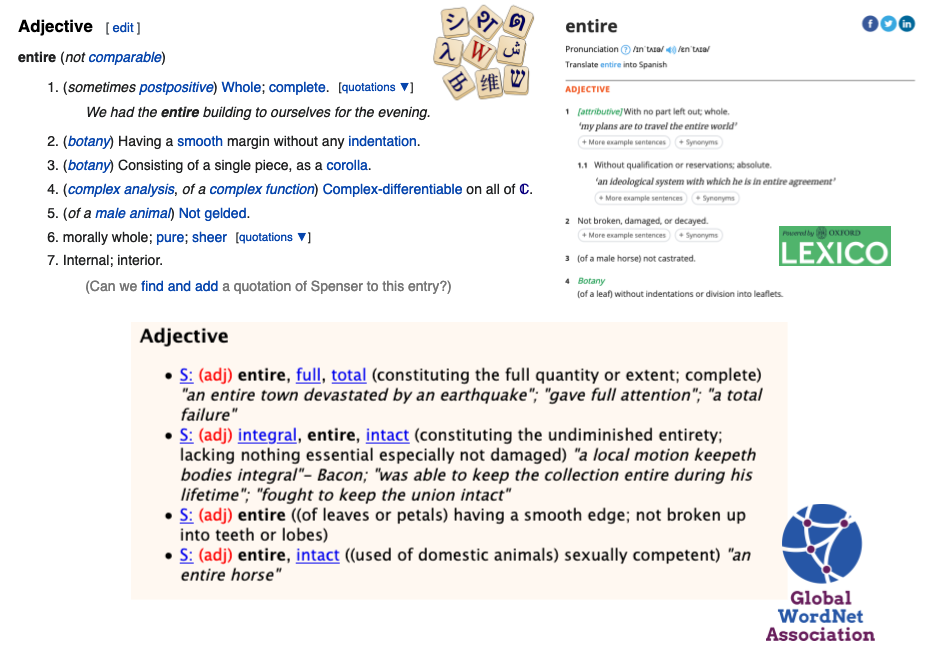
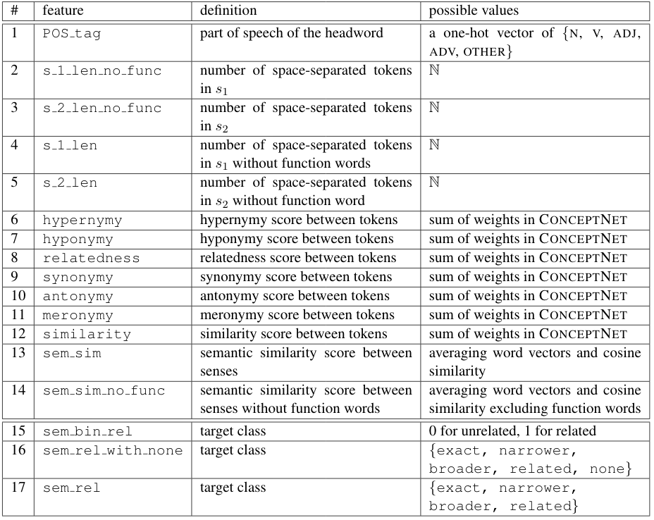
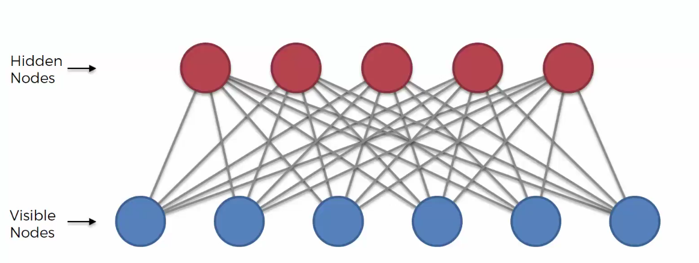

sina.ahmadi@insight-centre.org
“ Dictionaries are treasure houses of data on the uses of words. They are also our best starting point for all questions regarding word sense distinctions, in NLP, the humanities or lexicography. But to reveal the dictionary's treasures in a systematic way is no simple.”
Word sense alignment ➡ linking senses across resources
entire (adjective)

1. What are the relevant features that can be used for WSA? ➡ Manual extraction of features
2. How representation learning can help in improving the results? ➡ Restricted Boltzmann machine
3. Use the features for classifying semantic relationship between two given senses ➡ exact
, narrower
, broader
, related
, none
exact, relatednarrower, broaderSVM, Logistic regression, etc.
➡ Collecting new data instances by inverting sense order
Example: observer
Using a Restricted Boltzmann machine, map the extracted features (visible) to a set of hidden ones.

Any questions? 🙂